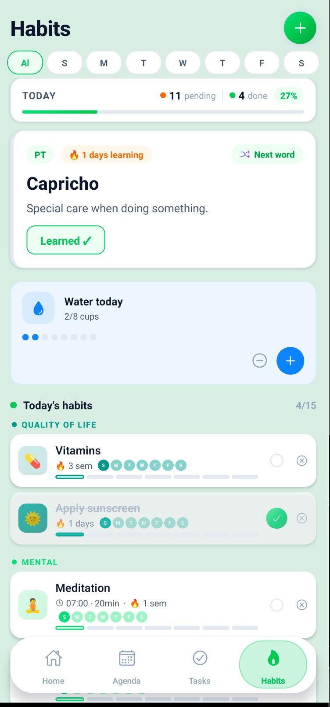
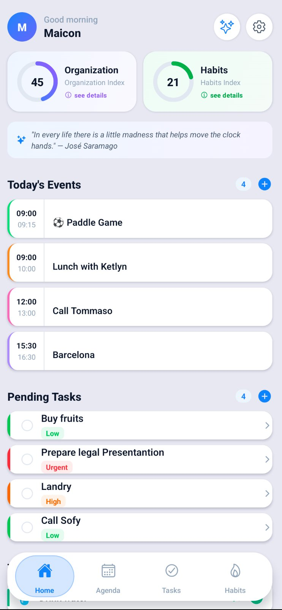
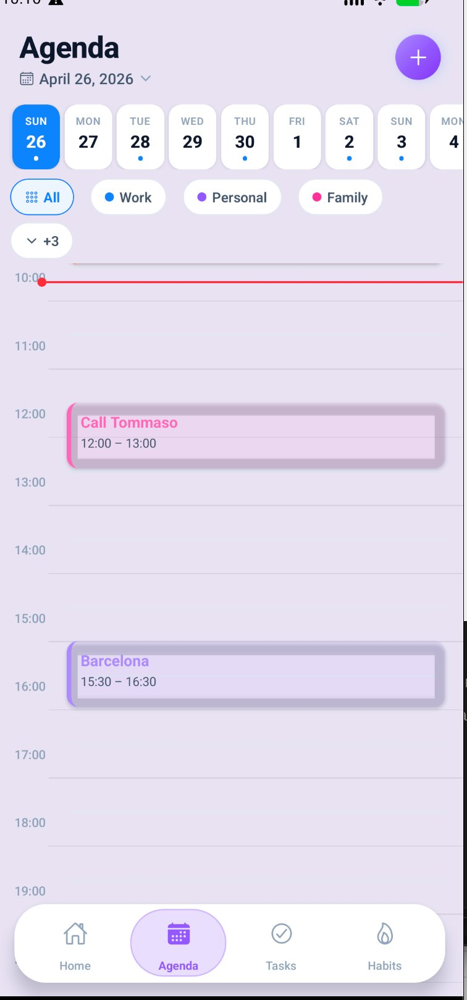
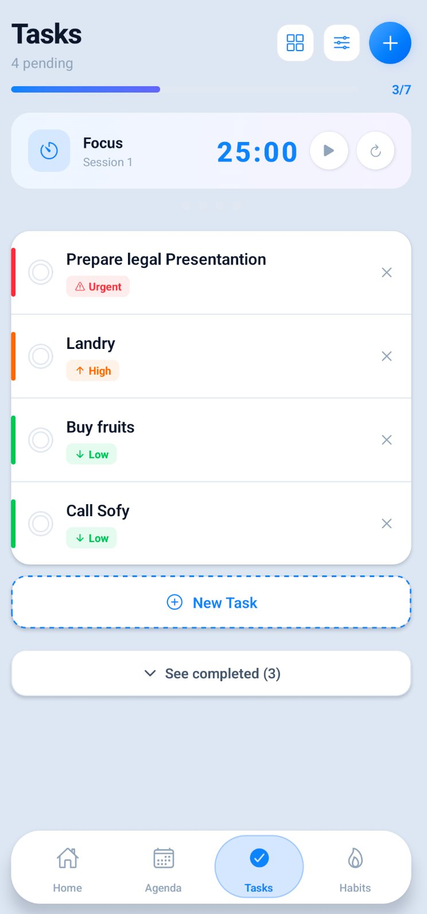
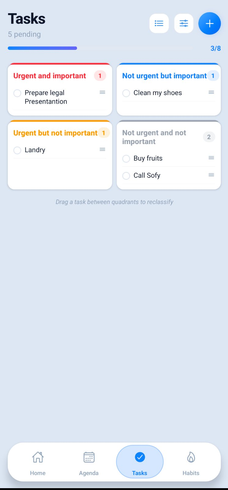
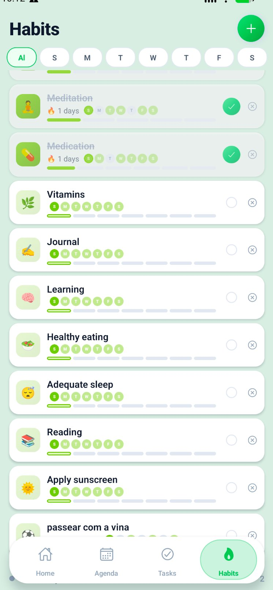
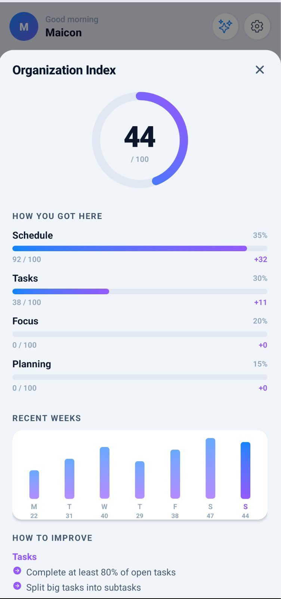
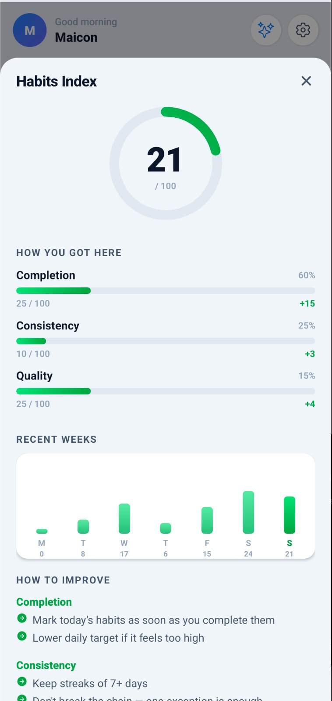

Balansy reúne agenda, tarefas, hábitos e foco em um único app inteligente. Menos apps abertos. Mais coisas feitas. Vida mais equilibrada.



Por que Balansy?
Você não precisa de mais apps. Precisa de um que entenda como sua vida funciona e ajude você a progredir todos os dias.
Chega de listas infinitas que só geram culpa. Balansy prioriza o que realmente move sua vida para frente — e esconde o resto.
Sua agenda, suas metas, seus hábitos e seu tempo de foco conversam entre si. Você para de gerenciar apps e começa a gerenciar sua vida.
Nossos índices de organização e hábitos mostram sua evolução em tempo real. Ver o número subir é o maior motivador que existe.
📅 Agenda
Visualize todos os seus compromissos em um calendário semanal limpo e intuitivo. Adicione eventos em segundos, receba lembretes no momento certo e nunca mais deixe algo importante passar.
✅ Tarefas
Com a Matriz de Eisenhower integrada, você classifica cada tarefa por urgência e importância. Nada cai no esquecimento. Foco total no que importa agora.


🔁 Hábitos
Rastreie seus hábitos diários com streaks que motivam você a não quebrar a corrente. Veja sua consistência crescer semana a semana e sinta a diferença no seu corpo, mente e produtividade.

🍅 Foco Pomodoro
A técnica Pomodoro comprovada pela ciência: 25 minutos de foco total, 5 minutos de descanso. Seu cérebro agradece, sua produtividade explode. Conectado diretamente com suas tarefas do dia.
📊 Índices Balansy
Nossos índices calculam sua produtividade e consistência em tempo real. O número só sobe quando você age. E ver ele subir vai te viciar.
Organização
Mede quantas tarefas você completa, como distribui seu tempo e se cumpre os compromissos da agenda.

Hábitos
Monitora sua consistência nos hábitos diários. Quanto mais dias seguidos, mais alto o índice — e mais forte o hábito.

Fundamentado em pesquisa
Cada funcionalidade tem base em décadas de estudos sobre cognição, comportamento e produtividade humana.
Baixe grátis e experimente por 7 dias com todos os recursos. Sem cartão de crédito. Sem compromisso. Só resultados.
Grátis para sempre nos planos básicos · Sem anúncios · Privacidade garantida